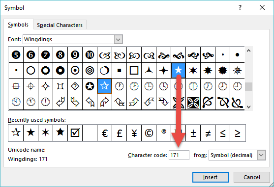

Being the 115th ranked general Excel blog on the internet sure has a nice ring to it. Well deserving of your e-mail subscription (located in the bottom right hand corner) if I was to be rather James Blunt about it. But what good is a rank if there are multiple categories to be considered?
"Voted best burger in town by¶
some guy who likes burgers."¶
- Yelp -¶
DOWNLOAD WORKBOOK¶
In this lesson we're going to create cascading drop downs and in cell graphics to rate popular (and less than popular) movie sequels. First things first: let's create some controls around our rating system.
- Hover above the column [Rating] until a downward black arrow appears. Then, click to select the table columns data body range.
- Select the Data tab then Data Validation enter the following information below within the respective tabs.
- Settings
- Change Allow: to Whole number and set the following values
- Minimum Value: 1
- Maximum Value: 5
- Change Allow: to Whole number and set the following values
- Input Message
- Title: Rating System
- Input message:
5 = "I Loved It!" 4 = "I Enjoyed It!" 3 = "I Feel Indifferent." 2 = "I Did Not Enjoy It." 1 = "I Hated It!"
- Error Alert
- Title: Invalid Rating
- Error Alert: Please enter a rating between 1 and 5.
When you select a cell within the [Rating] column, you will now notice the Input Message prompt next to the selected cell. I prefer to move this to a static position. To do so, click on the yellow prompt and drag it to the top of the worksheet. You will now notice that no matter what area you select within [Rating] it will remain at the top of the screen. (If you were to scroll down, it would continue to remain at the top of the current view.) Take a few minutes to rate the different movies - also try testing your Error Alert by entering a value either less than 1 or greater than 5.
Database Index¶
I know, I know, I know... databases - ughhhh. No, trust me! This is good. We're going to borrow from database concepts and create a index with unique auto numbering. It will make more sense as we go but this is easy - you got this!
Function: ROW
Describe It:
- Returns the current row
Syntax:
- \=ROW([reference])
- [reference] is optional
- Arguments in square brackets are always optional. Now, say that ten times fast so you remember.
Note:
- ROW is a volatile function. Anytime your Excel worksheet is recalculated it will need to determine the position of the cell.
Make It:
- Field: [ID]
- \=ROW()-1
BAM! Just like that: 1 thru 25. Okay, a bit anticlimactic - I get it. As we extend this concept to other columns, you'll appreciate this lifesaver.
Let's get rank out of the way so that we can identify the problem and discuss its downstream impact. Enter the following formula within the [Rank] column.
Function: RANK
Describe It:
- Determines a values rank within a range either by its ascending or descending position.
Syntax:
- \=RANK(number, ref, [order])
- Number is the value you want to compare
- Ref is the array in which all values are stored
- [order] is optional - defaults to descending
- 1 for Ascending
- 0 for Descending
Make It:
- Field: [Rank]
- \=RANK([@Rating],[Rating],0)
Talk It Out: If there are multiple results with the same value, Excel will assign them the same ranking. For example anything that is rated as a 5 would be assigned the same ranked value of 1, as this is the highest ranked position one can achieve. To overcome this limitation, we will use a helper column and a little bit of creativity.
Refresher: MAX
Make It:
- Field: [Unique Rating]
- \=[@Rating]+([@ID]/(MAX([ID])+1))
Talk It Out: Since our movie rankings are whole numbers, we want to use a method to add a decimal value between 0 and 1, so that a movie rating of 4 will never reach a 5. This is where the unique ID comes in handy by dividing each ID by the maximum ID plus one. For instance a record of 25 divided by the maximum record of 25 would equal 1, but by adding one digit more you can ensure that it will never achieve a whole number.
Alright, alright, alright...¶
Each movie now has a unique rating.¶
Change It:
- Field: [Rank]
- \=IFERROR(RANK([@[Unique Rating]],[Unique Rating]),"")
It's All About Position¶
Now that our movie ratings are all unique, let's concentrate on removing duplicate years and genres. Things will get a little interesting but stick with me - we're in that next level stuff now.
Year¶
Make It:
- Field: [Unique Year]
- \=IF(COUNTIF(\(D\)2:D2,[@Year])=1,[@Year],"")
Talk It Out: We are going to achieve our goal using an array based on the relative current position. In the formula we use an absolute position of \(D\)2 mixed with a relative reference of D2. For row 2 this formula simply reads as rows 2:2, but in row 3 you will see your formula has now changed to \(D\)2:D3. Well that's interesting - row 4 is \(D\)2:D4. Hey now! What is this dark magic?! Maybe we can visualize this real quickly in a table and then talk more about it.
| Unique Year | Array | Answer the Question |
|---|---|---|
| Row 2 | {2007} | Is the year 2007 found in the array once? |
| Row 3 | {2007, 1986} | Is the year 1986 found in the array once? |
| Row 4 | {2007, 1986, 1989} | Is the year 1989 found in the array once? |
| Row 5 | {2007, 1986, 1989, 2004} | Is the year 2004 found in the array once? |
| ... | ... | ... |
| Row 12 | {2007, 1986, 1989, 2004, 1991, 1978, 1990, 1987, 2017, 1984, 1989} | Is the year 1989 found in the array once? |
The absolute reference of \(D\)2 remains constant, but the relative reference continues to grow - adding more and more elements to your array the further your range extends. If you look back at the formula and the value is only found in the array once, return the current row's year. Otherwise, Excel will simply return FALSE if it is found more than once in your array as shown above in the Row 12 example.
Refresher: LARGE
Make It:
- Field: [Year List]
- \=IFERROR(LARGE([Unique Year],[@ID]),"")
Sure glad you had that ID field to satisfy the k argument. Return 1st largest, return the 2nd largest, return the 3rd largest. Wow. I told you that whole database index thing was going to be worth it!
Genre¶
Make It:
- Field: [Genre List]
- \=IFERROR(INDEX([Genre],MATCH(0,COUNTIF(\(K\)1:K1, [Genre]),0)),"")
- Before pressing Enter to complete your formula, press and hold Ctrl+Shift+Enter to force an array calculation
- When complete, your formula should include the following curly brackets { } denoting that this is an array formula.
We haven't talked about CSE calculations yet. If you're anything like me, you'll find array calculations to be both incredibly fascinating and frustrating at the same time, but we'll hit on that topic in a later lesson.
Talk It Out: Return the index position from the where the match value is equal to 0 ( TRUE = 1, FALSE = 0)
| Genre List | Array | Return Position |
|---|---|---|
| Row 2 | {0;0;0;0;0;0;0;...} | First Index Position Equals Zero |
| Row 3 | {1;0;0;0;0;1;0;...} | Second Index Position Equals Zero |
| Row 4 | {1;1;0;0;0;1;0;...} | Third Index Position Equals Zero |
| Row 5 | {1;1;1;0;1;1;0;...} | Fourth Index Position Equals Zero |
| Row 6 | {1;1;1;1;1;1;0;...} | Seventh Index Position Equals Zero |
When you get to row six, you'll notice that Adventure and Horror have now shown up twice, and the first unique value is now found at index position 7. The [ID] field you created earlier is a nice guide to follow along with to determine each element's position in the array.
Whew... now that we got that out of the way let's go ahead and start our lesson. "WHAT?! ARE YOU KIDDING ME?!" you say. I know... this was a lot of prep work, but you're in the business of building workbooks that are meant to last. The last thing you want for your career is something that always breaks that your name will be synonymous with until it's caput. Let's move on to creating a dependent drop down, some boolean logic and then we'll bring it on home with some pretty stuff - a.k.a. the stuff others actually care about.
Drop Downs
- Select the Formulas tab then Name Manager
- Select New...
Year¶
- Name: yearDropDown
- Scope: Workbook
- Refers to: =Data!\(J\)2:INDEX(MovieRatings[Year List],COUNTIF(MovieRatings[Year List],">0"))
Genre¶
- Name: genreDropDown
- Scope: Workbook
- Refers to: =Data!\(K\)2:INDEX(MovieRatings[Genre List],COUNTIF(MovieRatings[Genre List],"?*"))
Real Quick: We know that ">0" means, "Count all values in a range that are greater than zero," but what in the world is this "?*". The question mark means, "To find any single text character while in combination with an asterisk," and allows it to find one or more text characters.
Try This:
- \=COUNTIF(MovieRatings[Year],"?*")
- Returns a value of zero because the year column contains numbers.
- \=COUNTIF(MovieRatings[Genre],"H*")
- Returns a count of genres that start with the letter H. Not case sensitive.
Make It:
- Select the Dashboard worksheet
- Select cell F4 and go to the Data tab and then Data Validation
- Allow: List
- Source: \=genreDropDown
- Select cell F5 and go to the Data tab and then Data Validation
- Allow: List
- Source: \=yearDropDown
If you click on cells F4 and F5 you won't notice anything special - they return the values of the respective [Year List] and [Genre List] fields from the data tab but they fail to interact with one another. You know what that means?! More prep work!
Back To Work:
Select the following cells and go to the Name Box to type in the variable name
- F4: genreChoice
- F5: yearChoice
- Stored variables are now listed in the Formulas tab Name Manager.

Function: AND
Describe It:
- Checks whether all arguments result in a TRUE
Syntax:
- \=AND(logical1,[logical2],...)
Function: OR
Describe It:
- Checks whether any of the conditions result in a TRUE
Syntax:
- \=OR(logical1,[logical2],...)
Make It:
- Return to the Data worksheet
- In the [Include] field, add the following formula:
- \=AND(OR([@Genre]=genreChoice,genreChoice=""),OR([@Year]=yearChoice,yearChoice=""))
Change It:
- Field: [Unique Rating]
-
\=IF([@Include],[@Rating]+([@ID]/(MAX([ID])+1)),"")
- If [Include] is TRUE, then calculate the random rating, else return blank
-
Field: [Unique Year]
- \=IF((COUNTIF(\(D\)2:D2,[@Year])=1)*[@Include],[@Year],"")
- Boolean: TRUE = 1, FALSE = 0
Talk It Out: Basic multiplication tell us any number times zero (FALSE) returns zero, and any number times one (TRUE) returns the number. Adapting this process in conjunction with PEMDAS, you can break your problems into smaller chunks - starting with the innermost parentheses:
- (The count of 2017 = 1) * TRUE
- TRUE * TRUE = TRUE
- 1 * 1 = 1
- (The count of 2017 = 1) * FALSE
- TRUE * FALSE = FALSE
- 1 * 0 = 0
It's NOT(Not About The Cell)¶
We want to make our lists multi-directional. If you select the year first, you only see the genres that are applicable and vice versa. For this we want to utilize our [Include] column, as well as some creative thinking, to get to our desired result.
Function: NOT
Describe It:
- Returns the inverse of a logical expression
- If TRUE return FALSE
- If FALSE return TRUE
Syntax:
- \=NOT(logical)
Change It:
- Field: [Genre List]
- \=IFERROR(INDEX([Genre],MATCH(0,(COUNTIF(\(K\)1:K1, [Genre])+NOT([Include])),0)),"")
- Hold Ctrl+Shift+Enter to force an array calculation when completing your formula
Talk It Out: Our match criteria is 0 to ensure we are capturing unique genres only. Unfortunately for our [Include] column, if the result is FALSE, we remember this result will be a 0. Being the incredibly resourceful, creative, and extremely overqualified person that you are - I bet you were thinking, "Well earlier in this blog you said TRUE = 1. So just use the opposite of FALSE and be done with this already." I couldn't agree more! WE'RE DONE!... With the data at least. Let's do some pretty stuff on the Dashboard tab and we're home free.
Five Star SQL's
- Go to the Insert tab
- Select Symbol
- Change the font to Wingdings and locate the filled star and hollow star symbols. Make note of their Character Code below.
- Solid Star: Character code: 171
- Star Outline: Character code: 182
- If you want to insert into spreadsheet either double click the symbol or select insert.

I went ahead and did a lot of the heavy lifting with the INDEX/MATCH on the Dashboard tab since I know you are already a LOOKUP master. All I want from you right now is to go ahead and wrap up that pretty picture with some neat tricks. After this monster of a lesson, you deserve it.
Function: REPT
Describe It:
- Repeats text a given number of times
- Must be a positive, whole number
Syntax:
- \=REPT(text,number_times)
Make It:
- Field: [Rating]
- Change Font: Wingdings
- \=IF([@[Rating-Lookup]]<>"",REPT(CHAR(171),[@[Rating-Lookup]])&REPT(CHAR(182),5-[@[Rating-Lookup]]),"")
Talk It Out: As long as the [Rating-Lookup] column is not blank we will utilize the REPT function to first return solid stars. We will concatenate our solid stars with our star outlines by utilizing the ampersand character (&) to join the strings of text together. Knowing that our maximum scale is 5, we want to return 5 minus the movie rating. If the movie rating is 5 - great! It repeats the star outline character 0 times. If the movie rating is three, though, you will repeat 3 solid star characters and 2 star outlines ( 5 - 3 = 2).
Clean It Up:
Worksheet: Dashboard
- Hide columns A & B
Worksheet: Data
- Select columns F thru K
- Using the fill color, select a light grey to fill in all cells.
- Using the font color, select Automatic
- The grey fill is my calling card for workbooks that I've developed. I utilize this method to remind myself these are helper columns that contain formulas. The remaining cells in the table contain unaltered data. When you collaborate with others, it's good to share your methods or thought process so that they can easily navigate your work or edit as needed for their own purposes.
- Hide columns
Wrap It Up: Oftentimes, the pretty picture is all that people care about and that is 100% okay. For Excel developers like me and you, though, it's about more than just the finished product. I've said it before and I'll say it again - the success of your workbook is not based upon pretty charts or intricate formulas, but in how it stands the test of time (or Office Update). Your workbook was built to last. Great job.
"Excel lets things look professional, and people assume there’s substance behind it."¶
Douglas Klunder¶
You're still here? It's over. Go home. Go.